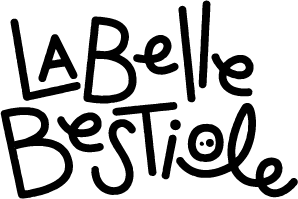

Accueil
E-Shop
Contact
Bière. Lot.
Sensations maltées / frissons houblonnés
depuis le Covid
depuis 2020
Nos bières

#
Style
Description
%
Dispo
La Lézarde
Blonde / Pale Ale
La blonde toute simple facile à boire
4.5%
dispo
La Renarde
Ambrée / Amber Ale
Du gout, du corps, simple et fruitée
5%
dispo
La Chouette
Blanche / Witbier
Une blanche épicée, de type belge
4.5%
dispo
La Couleuvre
IPA / West Coast IPA
Pure West Coast IPA, houblons californiens
6%
dispo
La Chevreuille
Bière belge, épicée, style Abbaye
6.5%
dispo
L'Hirondelle
Blonde / Blonde d'été
Légère et goulayante, prévue pour l'été
4.5%
-
L'Orvette
IPA / Easy Coast APA
American Pale Ale, houblons aux gouts exotiques
5%
-
La Vipère
IPA / Double IPA
Plutot West Coast, et sacrément forte !
8.5%
-
La Taupe
IPA / New England IPA
Trouble, totalement jus de fruits tropicaux
6.5%
-
La Biche
IPA / White IPA
Une blanche houblonnée
4.5%
-
La Salamandre
IPA / Black IPA
Une base de brune anglaise, et du houblon
5.5%
-
La Pie
Brune / Porter
Porter, charnu et trapu
6%
-
La Corneille
Brune / Stout
Un stout, costaud, porté sur le café
9%
-
La Fauconne
Saison / FarmHouse
Bière de type Saison, sèche et parfumée
6.5%
-
La Sanglière
Triple / Belge Triple
Une triple, forte et sèche
9%
-
L’abus d’alcool est dangereux pour la santé. A consommer avec modération.
En savoir plus